To design a 3D mold, machine it and use it to cast parts.
I designed a mold for mini traditional Dallah as seen in the below image:
It is used to serve coffee as it is a traditional Arabic drink that is usually served in most of the gathering such as family gathering, welcoming guests or friends meetings.
The first step was designing the 3D model of the Dallah, I used the picture of the UAE dirham, the official currency of UAE, as it has a painting of iconic Dallah as shown below:

I used Fusion 360 for this week assignment (both CAD & CAM). I started by drawing the edges of the dellah then making a revolve to end up with the 3D shape of the body. The rest of the dellah are designed by 2 sides symmetric extrude. The first model as seen below does not contain the head of the dellah as I was not having time to design it.
Then I cut the model in half as it is 360 model and can't be done in one go with the 2.5 axes SRM-20 CNC that we have, so I will need to use 2 sided mold to cast it, then I created the part A and part B of the mold by mirroring the first half with respect to the center line as shown below:
As seen above, Part A (right) has 4 cylinders that are used for perfect alignment with part B which has holes so the mold will be perfectly aligned.
After that, I used FabModules to generate the toolpath of the 3D model but every time I reach to the step of calculating the height map, the browser get crashed and nothing happen, in Chrome, firefox, and Mircosoft Edge. The picture below is a screenshot of this error:
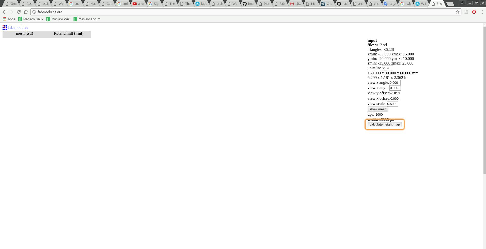
Thus I switched to 3D Printing, it was my last choice, so I will continue the assignment later on.

This print was done with Ultimaker 2 3D printer with normal settings. As you can see the 3D printer failed to make perfect cylinders.
I was not satisfied with my first design as it was so experimental, so I redesigned the mold to be much better than before and with the complete dellah this time! Again, I started with drawing on the canvas of the dirham to end up with the 3D model of the dellah:
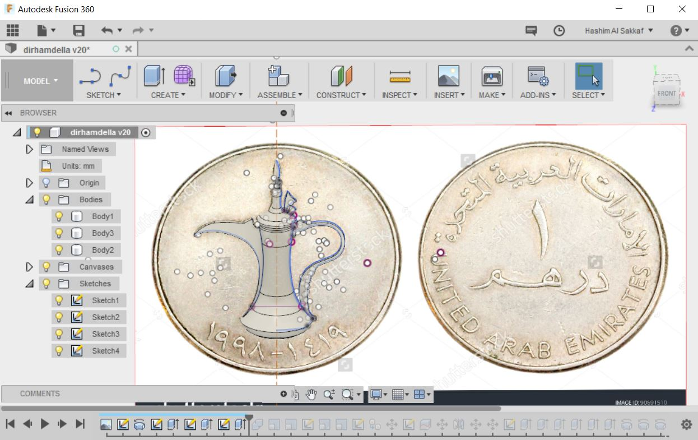
Then I cut it into symmetrical halves, and designed the mold to use the maximum volume of the wax which 176 mm x 76 mm x 39 mm.

I tired FabModules again, but it was taking so long to calculate the toolpath and what make it worth worse is that is always recalculate as if it is an endless loop. Thus I decided that Fabmodules.org not useable for this task at all...
Then I left with two choices, the first one is to use Roland SRP-Player that came with the machine, and the second choice is to use the Fusion 360 CAM. I tried the Roland SRP-Player before, and I did not like it at all, it was hard to re-assign the center point, or I was not knowing how to do it, well I did not try that much as I just did not like it. On the other hand, I was starving to try Fusion 360 CAM as it can work with many machines such as SRM-20 and ShopBot which what we have in the lab, it is just amazing tool.
So I switched to Fusion 360 CAM as seen in the below image:
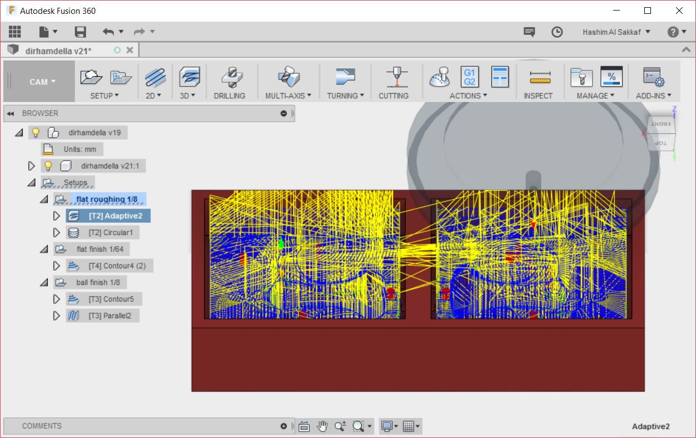
Fusion 360 CAM is so versatile as it can work with different machining techniques such as 2D machining, 3D machining, drilling, multi-axes machining, turning or even laser cutting! I used only 2D and 3D machining for my mold. Following is my work flow to generate the CAM files from Fusion 360 CAM to work with Roland SRM-20 CNC machine:
1- First, I started by adding the tools that we have in the lab to the tool library. I added the 1/8 flat end mill, 1/8 ball end mill and the 1/64 flat end mill. I went to Manage > Tool Library > New Tool as shown below:

2- Then I created the setup and named it "flat roughing" by clicking on Setup > New Setup. The origin should be at the left (0 X-Axis) lower corner (0 Y-Axis) as the Roland SRM-20 0 X-Axis and 0 Y-Axis is at the left lower corner. I also set the dimension of the stock (the blue wax in my case) to be 176 mm x 76 mm x 39 mm.
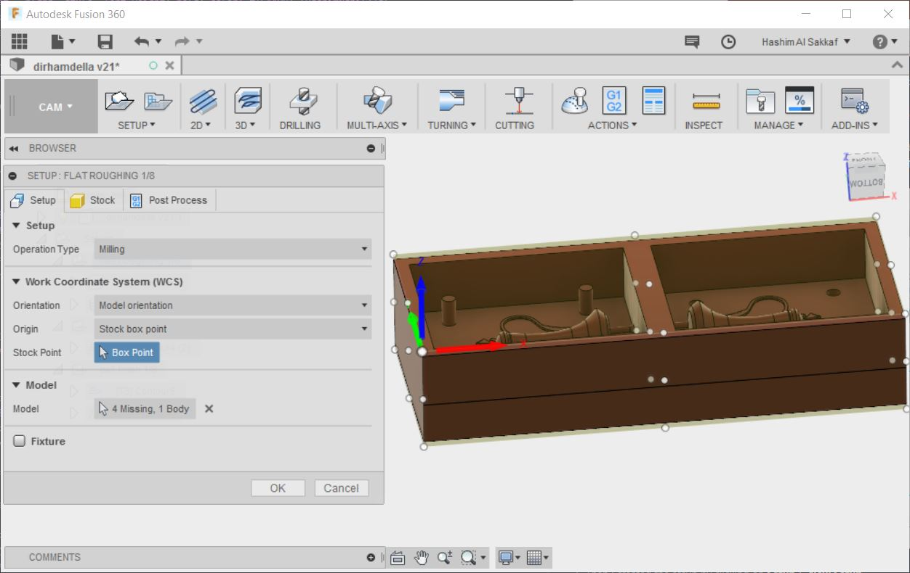

3- After that, I started with roughing, so I selected 3D > Adaptive Clearing operation. Adaptive Clearing is meant to remove large parts of the materials that are not useable, so it will not results in the perfect milling of the mold. You can check my setup sheet here, as you can generate the setup sheet by right clicking on the whole setup (recommended if there are multiple operations with the same milling bit) or on the operation then selecting setup sheet.
One of the most amazing features of Fusion 360 CAM is simulation, as you simulate the operation, so can see if something will go wrong while the machine is running. I did not pay attention to collisions between the tool and the mold, as it is wax and I made sure that the tool will long enough to go to the bottom of the mold.
After simulation, I generated the "prn" file which the file format that works with Roland SRM-20. I did that by first right clicking on the Adaptive Clearing operation then selecting Post Process then the following menu will appear:

In Post Configuration I selected roland rml.cps - Generic Roland RML, with this configuration the default machine will be the MDX 15 or MDX 20. I did not pay attention to that and ran the job with Roland V-Panel and I noticed that the milled model was much smaller than the real dimensions. So I stopped the machine and searched for SRM-20 and found that it is not an option in Fusion 360 CAM, but fortunately MDX-40 is in the list which has the same "Software Resolution" of the SRM-20! So I exported the .prn file and ran it again with Roland V-Panel. Following is the result of the rough finish:
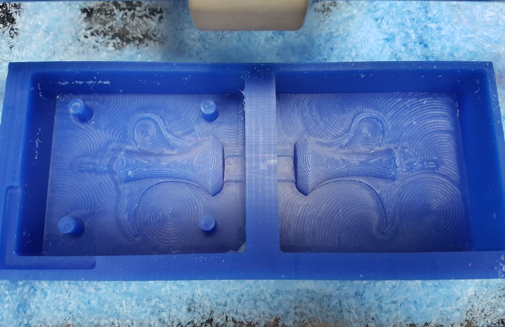
4- After roughing with the 1/8" flat end mill bit, I used the 1/64" flat end mill bit for milling the small details of the mold. I selected 3D > Contour and I picked only the features that contain small details as Fusion 360 CAM let you choose the faces or edges that you want to mill. Here is my Setup Sheet for this operation.
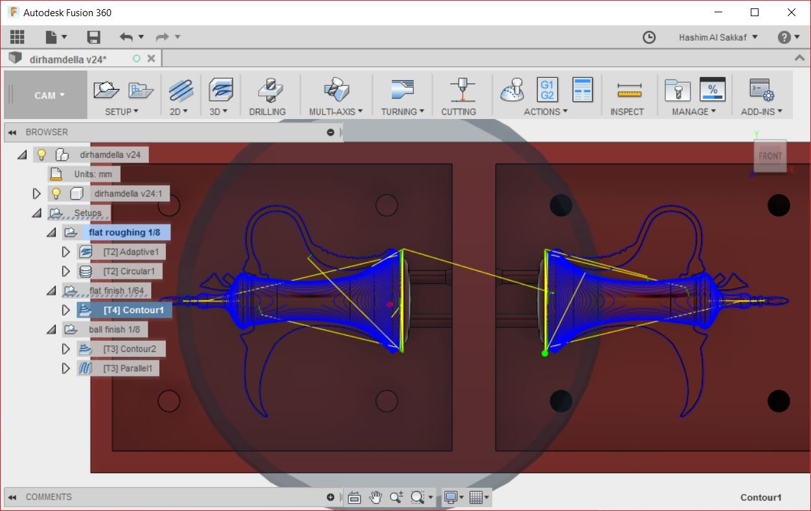
5- Then I used the 1/8" ball end mill bit for fine finishing. I duplicated the previous setup and rename it to "ball finish" then I added two operation. The first one is 3D > Contour and the second one is 3D > Parallel, here is the setup sheet for these operations.
6- As the first roughing operation did not mill the alignment holes and did not finish the alignment cylinders perfectly, I used "Circular Operation" from 2D > Circular, this milled the alignment holes and cylinders perfectly after selecting them. The setup sheet. Actually this operation need to be ran with the first roughing operation as the milling bit is used in both. I did that in the final version of the file. Below is final mold after being machined:
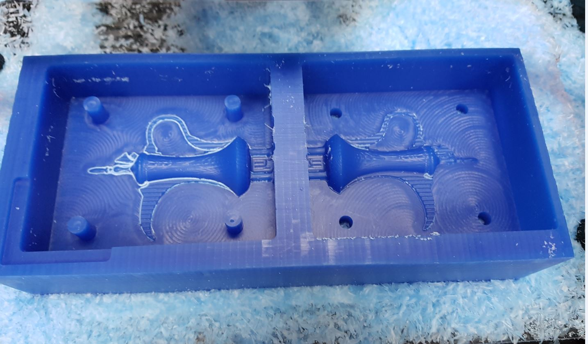
The outline of the left side was milled deeper than the outline of the right side as the 1/64" bit was lose and fell during machining thus I re-ran the job. I made the below video that shows how to use Fusion 360 CAM with Roland SRM-20 to machine the mold I designed.
I used water to measure the volume of the mold as shown below:

We have mold max 30 silicon and I used it for this week assignment. It consists of two parts A and B and after reading the datasheet that came with it I found that the mix ration is 100 A to 10 B. Then I mixed them in a plastic cup as shown below:


After that I put the mixture into the mold and put the mold into a plastic container and used the vacuum page to make the bubble go to the surface of the silicon.
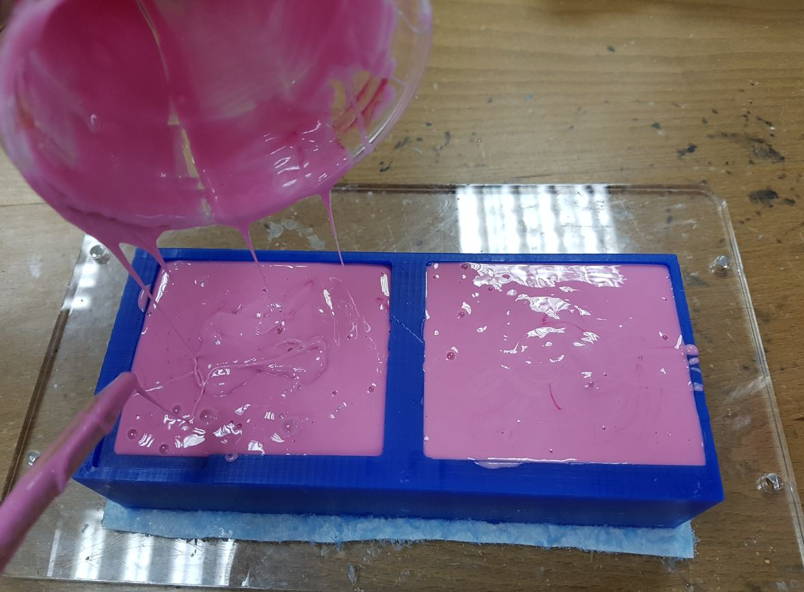

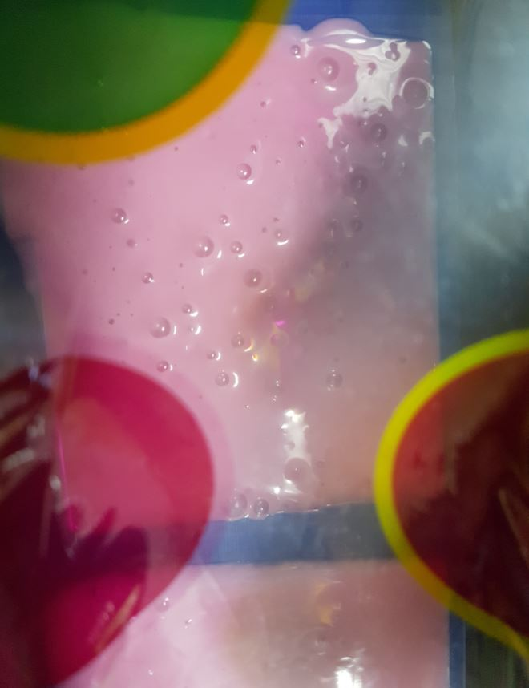
Then I let it dry for one day and the end result was quite good as shown below:

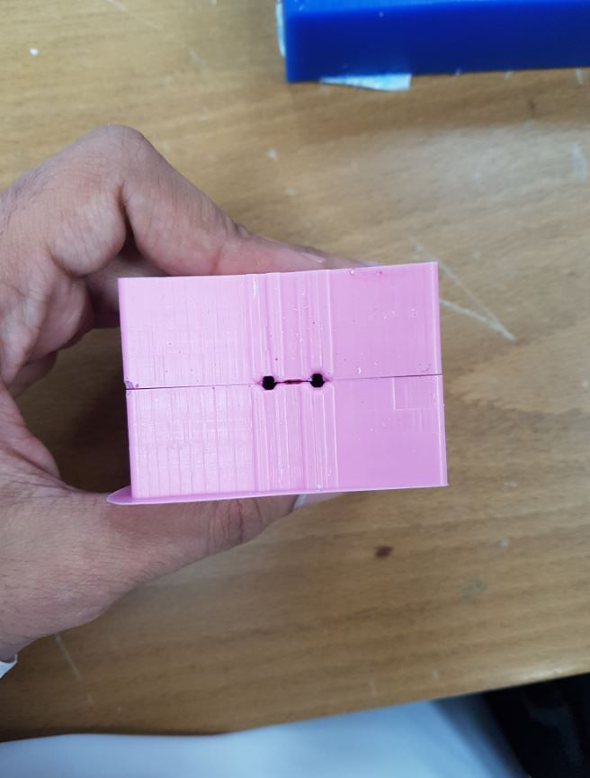
Then we heated up a candle wax and I used a needle to pure it inside my mold and I let it dry for 2 hours.
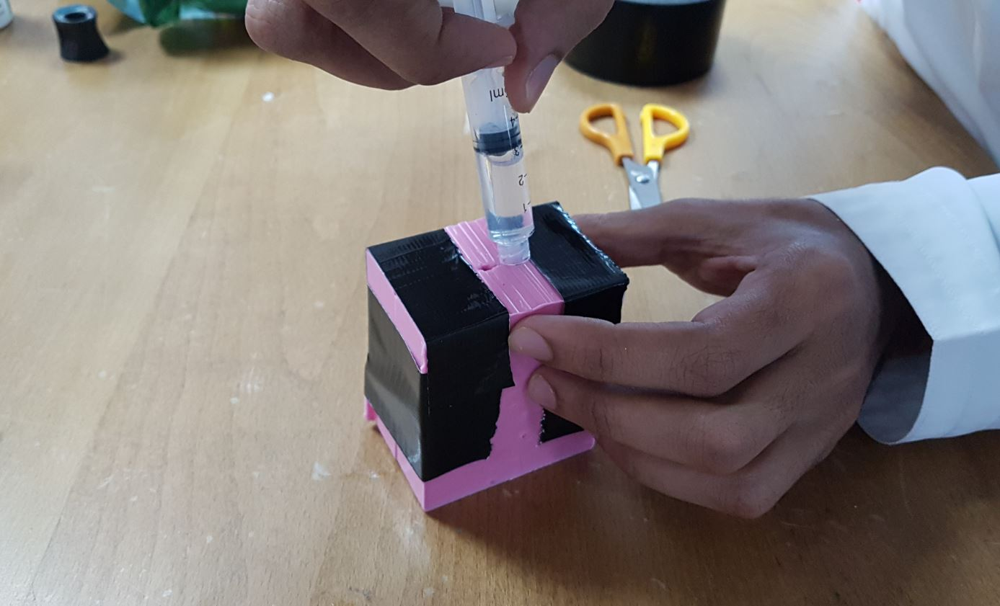
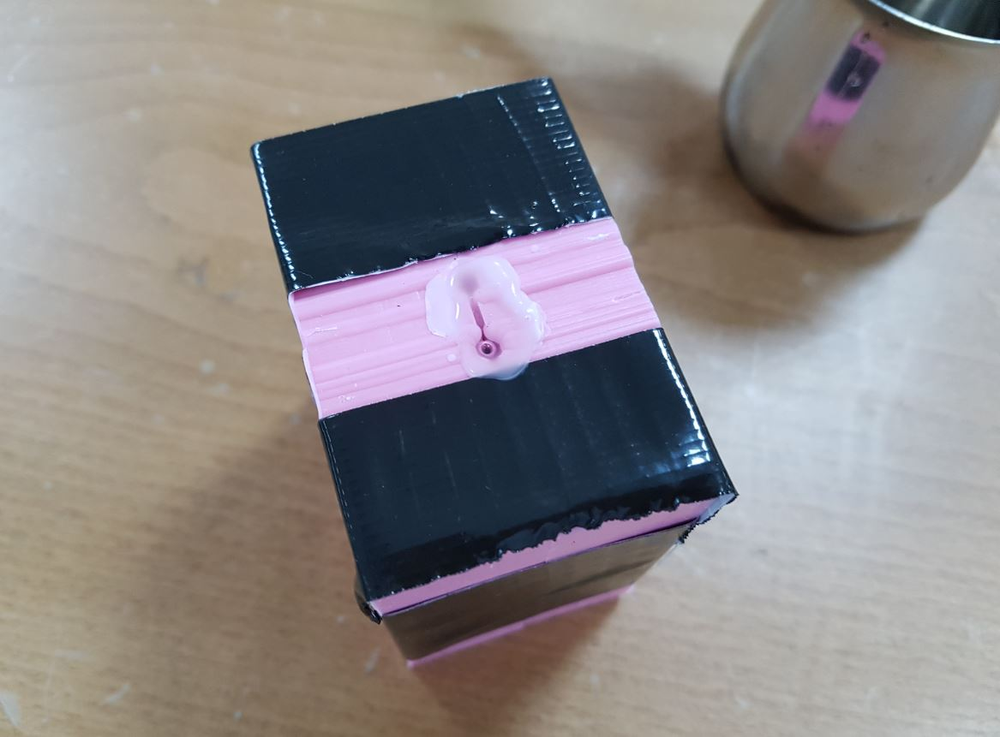
I noticed that the molded part broke after taking it out of the mold because of the tiny details I had. I guess I need to use harder material next time!
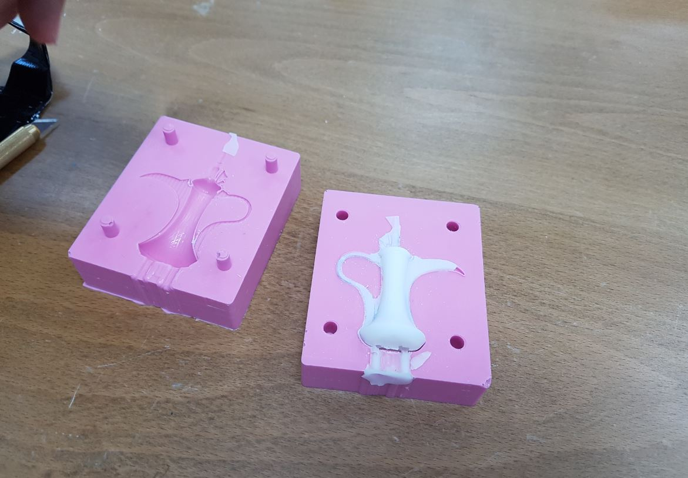

{kind=link}